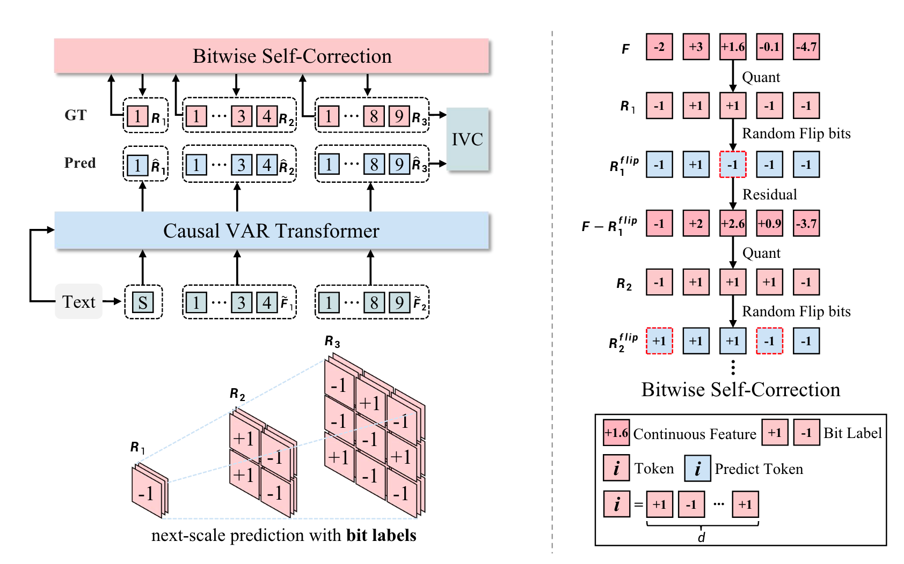

Method
Infinity introduces bitwise modeling, which incorporates a bitwise multi-scale visual tokenizer,
Infinite-Vocabulary Classifier (IVC), and Bitwise Self-Correction. When predicting Rk,
the sequence (R1, R2, ..., Rk-1) serves as the prefixed context and the text condition guides the prediction through
a cross attention mechanism. Different from VAR, Infinity performs next-scale prediction with bit labels.

Visual tokenizer quantizes continuous features and then gets index labels. Conventional classifier (left) predicts 2d indices.
Infinite-Vocabulary Classifier (right) predicts d bits instead. Slight perturbations to near-zero values in continuous features
cause a complete change of index labels. Bit labels (i.e. quantized features) change subtly and still provide steady supervision.
Besides, parameters of conventional classifiers grow exponentially as d increases, while IVC grows linearly. If d = 32 and h = 2048,
the conventional classifier requires 8.8 trillion parameters, exceeding current compute limits. By contrast, IVC only requires 0.13M
parameters.

Weakness of teacher-forcing training. VAR inherits the teacher-forcing training from LLMs. However, next-scale prediction
in vision is quite different from next-token prediction in language. Specifically, we cannot decode the complete image until
residuals Rk from all scales are obtained. We find that the teacher-forcing training brings about severe train-test discrepancy
for visual generation. In particular, the teacher-forcing training makes the transformer only refine features in each scale
without the ability to recognize and correct mistakes. Mistakes made in former scales will be propagated and amplified in latter
scales, finally messing up generated images (left images in Fig.12).
In this work, we propose Bitwise Self-Correction (BSC)
to address this issue. In particular, we obtain Rf lip k via randomly flipping the bits in Rk with a probability uniformly
sampled from [0, p], imitating different strengths of errors made in the prediction of the k-th scale. Here comes the key
component of bitwise self-correction. Rflip k contains errors while Rk doesn’t. After replacing Rk with Rflip k as predictions
on the k-th scale, we recompute the transformer input e Fk. Besides, re-quantization is performed to get a new target Rk+1.
The whole process of bitwise self-correction is illustrated in Alg.2. We also provide a simplified illustration in Fig.3
(right) for better understanding. Notably, BSC is accomplished by revising the inputs and labels of the transformer.
It neither adds extra computational cost nor disrupts the original parallel training characteristics.


 `
`